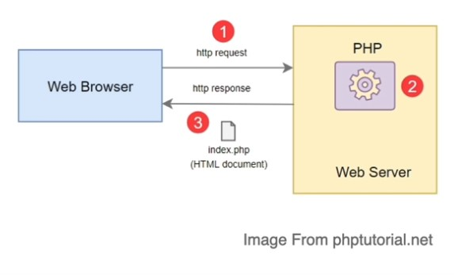

Jak funkcjonuje PHP?
PHP to język skryptowy ogólnego przeznaczenia nakierowany na web development
- Interpretowany język po stronie serwera. Nie jest przetwarzany przez przeglądarkę tak jak Javascript lub Python
- Może byc pisany pomiędzy znacznikami HTML w tagach <?php ?>
- Najczęściej używany z relacyjnymi bazami danych MYSQL

1. Przeglądarka przesyła żądanie (ang. request) do serwera
2. Kod PHP jest przetwarzany
3. Serwer przesyła HTML z powrotem do serwera
Instalacja języka PHP
Zanim rozpocznie się przygodę z językiem PHP, potrzebna jest prawidłowa instalacja tego języka na komputerze i przygotowanie odpowiednich narzędzi.
Warto pobrać i zainstalować XAMPP z PHP, serwerem i MySQL lub każdy plik osobno.
PHP jest najczyściej używany z zestawem LAMP
Narzędzia takie jak XAMPP i MAMP dają wszystko, co potrzebne do tworzenia stron lub aplikacji w PHP
Powrót do strony tytułowej